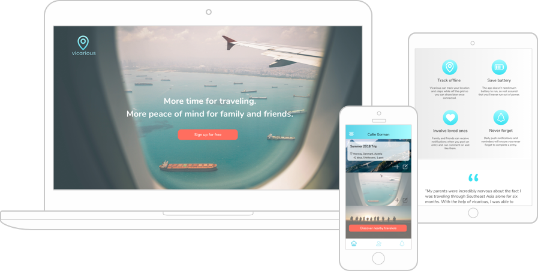

A personal travel log app
Threat: Users love that the app automatically tracks your location and all the places you visit throughout the day.
Opportunity: Trip summaries are specific to geographic locations, number of steps, distance, and photos, but no other trip details.

A travel journal focused on travel maps
Threat: Beautiful, simple interface where friends on the same trip can collaborate on entries.
Opportunity: Focus is on writing open ended journal entries and uploading photos.

A collaborative travel itinerary app
Threat: One of the most well known travel apps on the market.
Opportunity: Interface feels outdated, and there is no place to add other info aside from itinerary.